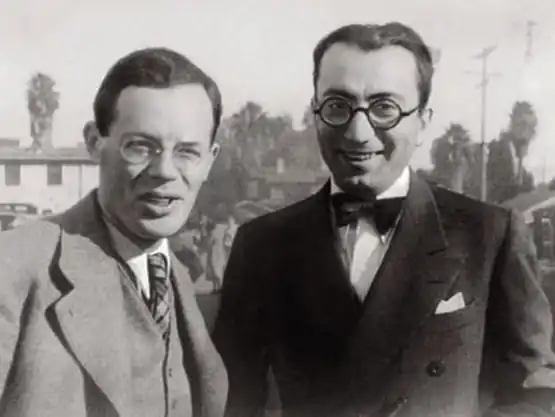
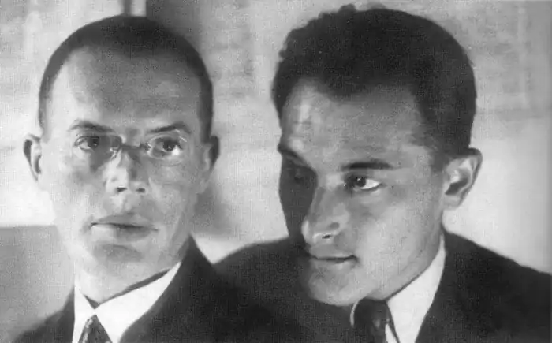

Місце народження – Одеса.
Ілля Арнольдович Ільф (Ієхієл-Лейб Файнзильберг) (1897 — 1937) – російський радянський письменник. Народився в сім'ї банківського службовця. В 1913 році закінчив технічну школу, після чого працював в креслярському бюро, на телефонній станції, на військовому заводі. Після революції був бухгалтером, журналістом, а потім редактором в гумористичних журналах. Був членом Одеської спілки поетів. В 1923 році приїхав в Москву, став співробітником газети "Гудок". Писав матеріали гумористичного і сатиричного характеру, здебільшого фейлетони. Помер від туберкульозу в Москві 13 квітня 1937 року.
Євген Петрович Петров (справжнє прізвище Катаєв) (1903 — 1942) народився в сім'ї вчителя. В 1920 році закінчив гімназію, працював кореспондентом Українського телеграфного агентства. Після цього протягом трьох років служив інспектором карного розшуку. В 1923 році приїхав в Москву, де став співробітником журналу "Красный перец", а в 1926 році прийшов працювати в журнал "Гудок". Після смерті Ільфа пробував опублікувати записні книжки Ільфа, задумував великий твір "Мій друг Ільф". В 1939-42 працював над романом "Путешествие в страну коммунизма", в котрому описував СРСР в 1963 році. Під час другої світової став фронтовим кореспондентом. Загинув 2 червня 1942 року – літак, яким він повертався з Севастополя, було збито німецьким винищувачем. В 1927 році творча співпраця Ільфа і Петрова почалася романом "Двенадцать стульев" (вони працювали разом в газеті "Гудок"). Пізніше у співавторстві було написано: роман "Золотой телёнок" (1931); новела "Необыкновенные истории из жизни города Колоколамска" (1928); новела "1001 день, или Новая Шахерезада" (1929); повість "Одноэтажная Америка" (1937). В 1932 — 1937 роках Ільф і Петров писали фейлетони для газети "Правда".